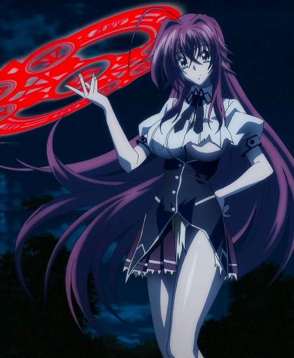

HAREM
Etimologia
Harem es un término utilizado en el anime y manga para referirse a un subgénero caracterizado por un hombre que está rodeado por muchas mujeres. En muchas ocasiones, este tipo de series son adaptaciones de juegos de simulación de citas o diseñados para atraer audiencias similares, en especial publicaciones de género seinen. Se denomina harem inverso cuando es la mujer quien en manga/anime se encuentra rodeada por muchos hombres. El término fue creado por fanáticos occidentales de lo que se conoce usualmente como lovecomi (comedias románticas), sin embargo, su implicación básica es conocida también por los fanáticos japoneses.
Caracteristicas
El harem anime típico, incluye varios personajes, usualmente un mínimo de un chico (la mayoría de las veces es uno) y tres o más chicas cuyas características conforman estereotipos populares en la fanaticada moe. El término no necesariamente implica connotaciones sexuales. Muchos de los personajes femeninos aportan diferentes niveles emocionales relacionados con el protagonista, que van desde intereses románticos a amistades casuales o parentescos. En general, las tendencias van dirigidas a uniones familiares/amistosas y la seriedad de las relaciones románticas puede variar considerablemente. Los fanáticos concuerdan en que la mayoría de los personajes femeninos en las comedias harem tienden a ser, o se han convertido, en personajes estereotipados con poca o ninguna originalidad en sus diseños. Muchas comedias harem se recuestan en el uso excesivo de fanservice, centrando la tensión en malentendidos graciosos, comúnmente con personajes femeninos que exageran sus emociones sin razón aparente. Esto hace que algunos fanáticos critiquen este tipo de humor considerándolo repetitivo, altamente sexista y abusivo. Muchos también se sorprenden de la carencia de relaciones con hombres aparte del protagonista, lo que en ocasiones se explica como un deseo del autor de controlar el tamaño de lo que ya se consideran muchos personajes o el no tener un interés particular en diseñar otros personajes masculinos que posiblemente no interesen a los fanáticos. Algunos fanáticos argumentan que la cantidad de chicas aumentan la posibilidad de que alguien en la audiencia encuentre una chica que apele a sus gustos, y el personaje masculino es alguien con quien pueden relacionarla de forma humorística.
Animes Famosos
High School Dxd (2008)
Masamune-Kun no Revenge (2012)
Saenai Heroine no Sodatekata (2012)
Hayate no Gotoku (2004)
Bokutachi wa Benkyou ga Dekinai (2019)